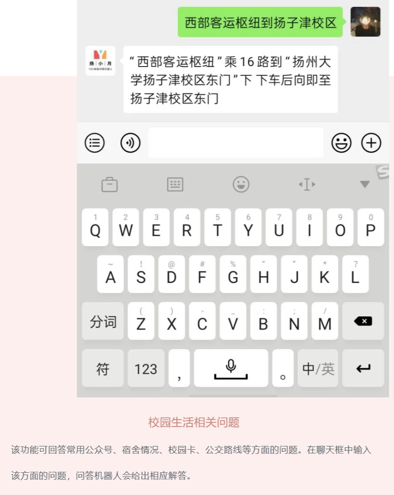

《软件项目管理》致力于提高学生的软件项目管理和开发实践能力。以下就是他们的作品。敬请欣赏体验，诚挚期待您的回馈！
温馨提示：带引号的（如“******”）皆为微信公众号，直接在微信公众号里搜即可。
一、校园智能问答机器人：
1. “扬大二手书”（孙佳铭等人）：（体验版）
本软件旨在帮助扬州大学的师生交易闲置书、二手书，提高闲置物品的利用率，提升扬州大学师生间的学习氛围。实现了以下功能：卖家上传书籍功能、买家查看书籍详情信息和选购功能、搜索特定书籍功能、邮件通知买方卖方功能（提醒发货、提醒收货）、联系客服功能。
二维码动态生成。
使用说明：
打开软件，进入个人中心页进行注册/登录：
图 1 注册/登录界面
进入发布页进行书籍发布：
图 2 发布书籍
扫码并完善书籍信息：
图 3 完善书籍信息
最后确定发布：
图 4 成功发布
（3）在首页查看出售中商品：
图 5 商品展示
点击物品，查看详情：
图 6 书籍详情页
点击联系卖家，购买此书，并获得联系方式：
图 7 交易状态页
图 8 邮件提醒
图 9 获取卖家信息页
（4）确认收货
图 10 成功收货
（5）遇到问题，可以在个人中心页面，点击智能客服进行询问：
图 11 智能客服
2. “羊村希望小学”（刘傲等人）：
用户在关注公众号后，便可以对有关扬州大学的问题进行实时的提问，我们的机器人系统会在线进行回答。在公众号的菜单栏部分我们也设置了一些热门功能的一键导航，方便用户的使用。

使用导图：

图（1）

图（2）
图（3）

图（4）
3. “扬小月”（周绍峰等人）：
该项目是针对扬州大学学生的问答机器人，主要支持自动回答包括学校基本情况、学习、校园生活等方面的问题，亦支持语音输入、闲聊等功能。
用户手册
①用户可关注公众号，通过菜单中的“用户手册”获取。或直接通过链接 https://mp.weixin.qq.com/s/j7OSzD56llzb03cqP4y3Ww 打开用户手册。
②下方提供用户手册“按功能分类图”及“整体长图”。

图 1 分类图1

图 2 分类图2

图 3 分类图3

图 4 分类图4

图 5 分类图5

图 6 长图
4. SALA软件（舒俊等人）：app-release.apk
该APK名为“SALA”，内置的聊天头像均为自带头像。该项目的机器人采用“图灵机器人”连接APi的方式，因资源有限，目前仅支持文字类的问题，以及问题设有上限。该机器人可以闲聊（包括简单的英文翻译，讲故事等），可以询问有关扬大的相关问题。
使用说明：
二、团队管家：
5. TeamButler（王智慧等人）：teambutler.vifim.com
团队管家包含团队管理中对于任务计划、人员管理，从项目需求到项目开发、部署等等功能。
使用说明见“TeamButler-软件项目公测使用说明”。
6. 团队管家（周笑等人）：
该平台是为了督促成员，在项目进行的时候，对其进行促进和鼓励管理员能看到每个员工的业绩，员工通过对公司的日常的一些打卡，还有对于。他们业绩的评分，然后做出一些团队新闻，从而促使其他团员继续努力。
使用说明：见“火炎焱-团队管家用户使用说明导出图片.docx”。
7. 大学生培养跟踪平台（杨文强等人）：
我们的网站针对大学生群体，实现个人培养跟踪，记录学生的个人发展过程，并从学生成绩、学校环境、教师授课等方面进行分析和讨论。为学生提供一个可以查看自己发展历程的平台，学校也可以通过该平台对学生进行监督和引导，提高学校自身的教学质量。
使用说明：
图二 学生端功能(1)
图三 学生端功能(2)
图四 学生端功能(3)
图五 学生端功能(4)
图六 学校端功能(1)
图七 学校端功能(1)
图八 学校端功能(2)
图九 学校端功能(3)
三、科研成果中介平台：
8. 科研管理平台（陈志涛等人）：39.97.165.52/index.aspx
系统主要板块：科研成果管理， 科研项目承接， 科研能力量化评估
科研成果管理:科研人员提交相关相关科研成果与相关联的审核材料，交由科研秘书进行审核评估。
科研项目承接:科研秘书转发并发布相关科研项目，由科研人员进行选择承接某项目并成为其科研成果。
科研能力量化评估:针对科研人员上传的成果数量以及科研成果质量给出量化分析结果。
使用说明：

9. 科研成果转化平台（卢从洋等人）：http://www.lucongyang.cn
一个众包式的成果转化平台-可以发布成果，发布需求,找需求,找成果;同时可以咨询专家，在论坛交流；实现全流程的成果转化.
使用说明：

10. 新科科研成果转化平台（范文锋等人）：http://yzu-bobo.top/
面向高校和企业搭建一个中介桥梁，在网上发布成果，发布需求，推介成果，交易成果等，实现全流程的成果转化。
用户使用说明：
在首页右上角进行登录/注册
图1
图2

图3
查找成果/需求功能：
可以进行关键字搜索以及筛选搜索
图4
成果/需求发布功能：
下图为管理用户已经提交发布申请成果/需求页面
可以进行添加/删除/提交给管理员审核
图5
下图为添加申请成果/需求的页面
填写相关信息后提交即可
图6

图7
交流功能：
分为企业和高校入口
图8
企业入口发布企业资源
图9
高校入口搜索/查看企业资源
图10
资源的详细页面
图11
评论功能
图12
客服功能：
在各个页面右侧，单击在线客服，即可进入客服页面与客服对话
图13
个人消息页面：
查看自己发布的需求/成果相关回应信息
11. “科创体验”（吴汶杰等人）：
四、谣言检测平台：
12. “AI谣言检测”（周昌剑等人）：
针对各种网络每天发布的一些微博、新闻、评论等，能够用多种方式如图片识别、关键字搜索、语音识别等自动检测相关的谣言。
使用说明：
图一 主界面
图二 文字查询界面
图三 查询结果的相关谣言列表
13. “识谣家”（冯彪等人）：
识谣家（V1.0.0）是软件1701识谣团队开发的小型网络谣言识别软件，可从微信小程序直接进入，包含了图片文字等方式的谣言识别功能以及识别记录查询等功能。
使用说明：见“识谣家-用户使用说明.docx”.